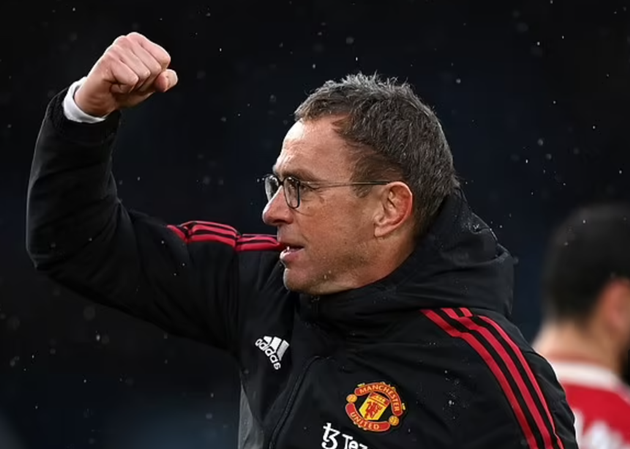
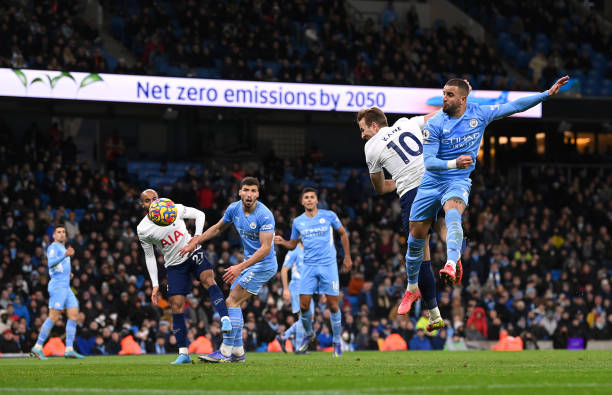
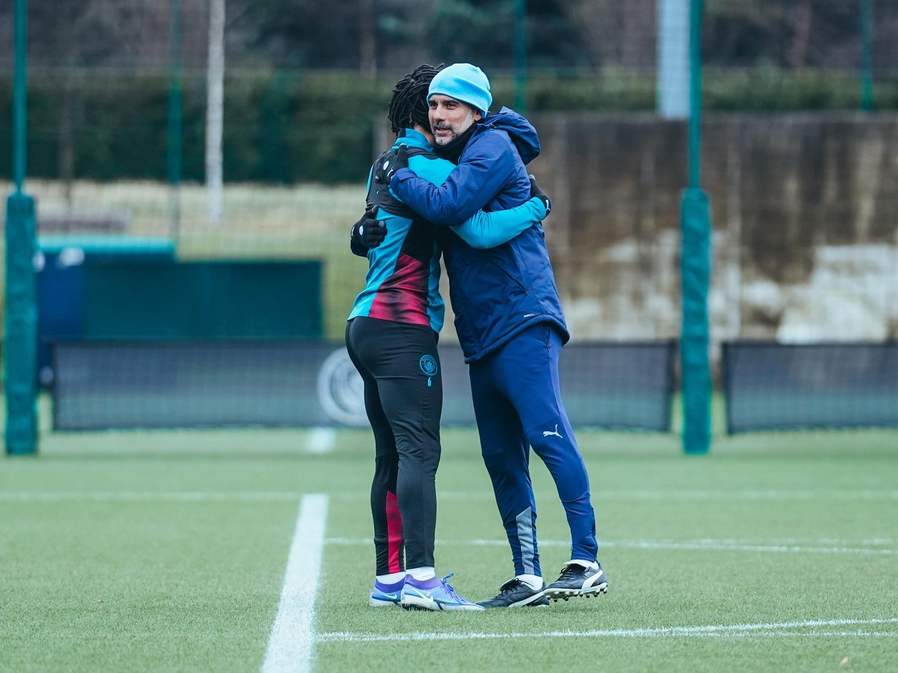
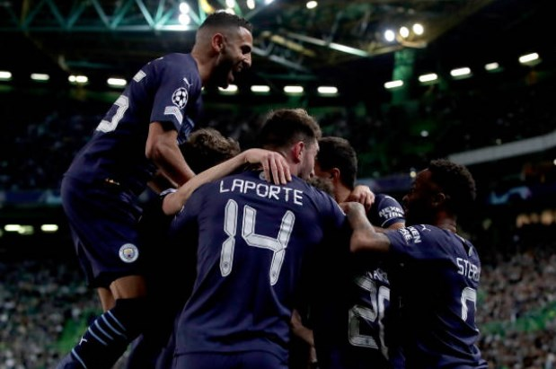

Manchester City - Tin tức
Man City không còn chiếm thế thượng phong khi họ đã bị Liverpool rút ngắn khoảng cách sau vòng 26 Premier League.
.3 giờ
Ferdinand:"Chỉ có Man City giành được nhiều điểm số hơn họ" 
Man United nhận phải nhiều ý kiến trái chiều khác nhau kể từ khi Ralf Rangnick lên nắm quyền. Sau đây là quan điểm của Rio Ferdinand.
.1 ngày
Màn trình diễn xuất sắc của kẻ hủy diệt Man City 
Ngôi sao người Anh đã có cho mình một trong những trận đấu hay nhất mùa này trên sân Etihad vào đêm qua.
.2 ngày
Pha lập công cứu vãn cả mùa Premier League

Sự xuất sắc đến từ ngôi sao sinh năm 1993 đã giúp cuộc đua tại Ngoại hạng Anh trở nên hấp dẫn hơn
.3 ngày
Sao Man City chỉ ra nguyên nhân thua đau Tottenham
Tiền vệ Ilkay Gundogan bày tỏ sự thất vọng về màn trình diễn của Manchester City trận gặp Tottenham Hotspur.
.4 ngày
Man City sẵn sàng phục thù, chấm dứt hy vọng Top 4 của Tottenham 
Tottenham Hotspur hứa hẹn là bài test khó nhằn với Man City, đồng thời mang đến hy vọng cuộc đua vô địch không kết thúc quá sớm.
.4 ngày
Man City thắng 5-0 tại Champions League

Thầy trò Pep Guardiola đặt một chân vào tứ kết Champions League sau chiến thắng 5-0 trên sân của Sporting CP rạng sáng 16/2.
.6 ngày
Man City lập cột mốc lịch sử ở Champions League

Manchester City vừa tạo ra một cơn mưa gôn vào khung thành của Sporting Lisbon tại lượt đi vòng 16 đội Champions League.
.8 ngày